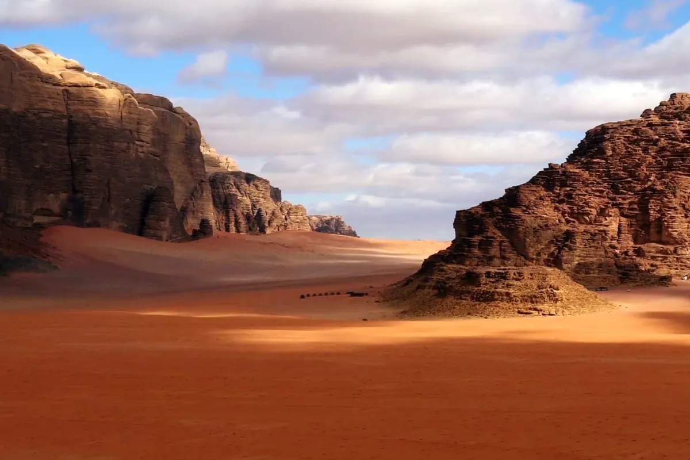
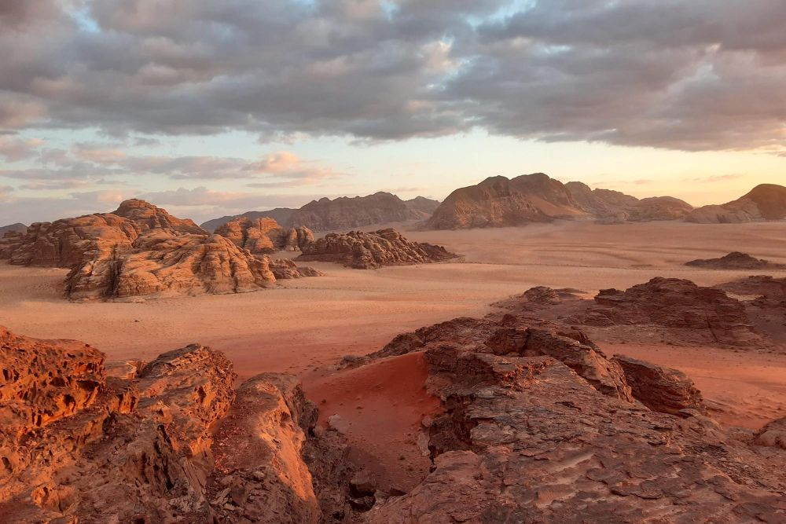
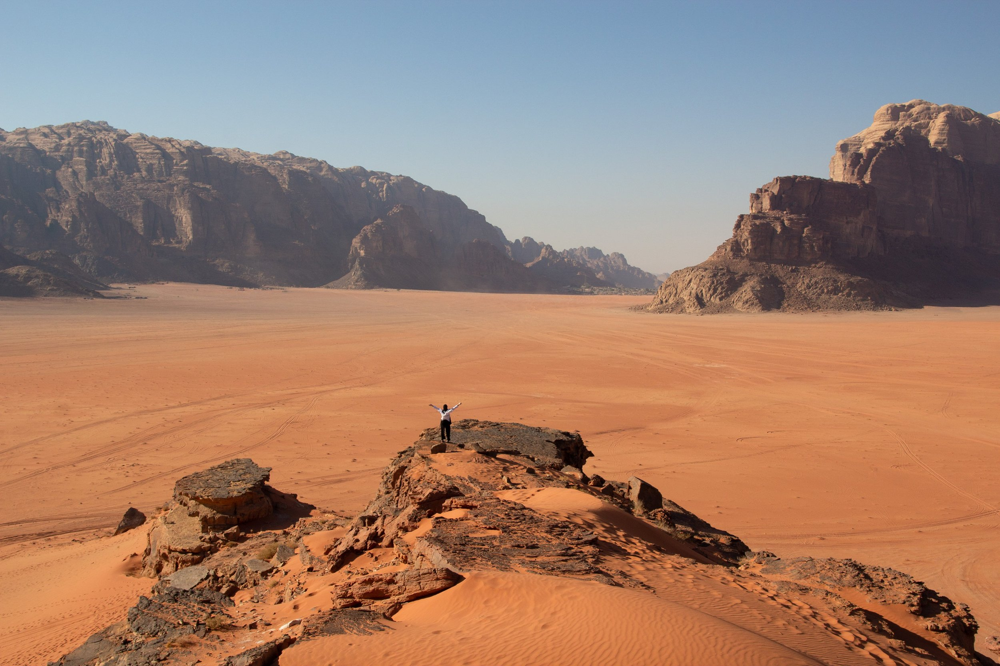

Wadi Rum is a stunning desert valley located in southern Jordan. It is known for its beautiful red sandstone formations, towering cliffs, and stunning sand dunes. Visitors to Wadi Rum can explore the desert by jeep, camel, or on foot and experience the natural beauty of the area.
Wadi Rum is a cool and unique destination that offers visitors a chance to experience the beauty of the desert. Visitors can explore the area by jeep or camel and see the stunning sandstone formations, including the famous "Seven Pillars of Wisdom" rock formation. Visitors can also hike through the desert and see the local flora and fauna, including desert foxes and ibex.
Wadi Rum is a good holiday destination because it offers visitors a chance to experience the natural beauty of Jordan. The area is home to several other natural attractions, including the Red Sea and the Dead Sea. Visitors can also explore the nearby city of Aqaba, which offers visitors a chance to see the local markets, shops, and restaurants.
There are several hotels in the area that offer visitors a comfortable and luxurious stay. One of the best hotels is the Wadi Rum Desert Resort, which is located in the heart of the desert and offers visitors a unique and unforgettable experience. The hotel features traditional Bedouin tents that are decorated with local handicrafts and offer visitors a chance to experience the local culture. Another great hotel is the Captain's Desert Camp, which is located near the entrance to the desert and offers visitors easy access to the area.
In conclusion, Wadi Rum is a must-visit destination for anyone interested in natural beauty and outdoor activities. The area offers visitors a unique and unforgettable experience that they will remember for the rest of their lives. Wadi Rum is a good holiday destination because it offers visitors a chance to experience the natural beauty of Jordan, as well as the nearby natural attractions and the local culture.
  